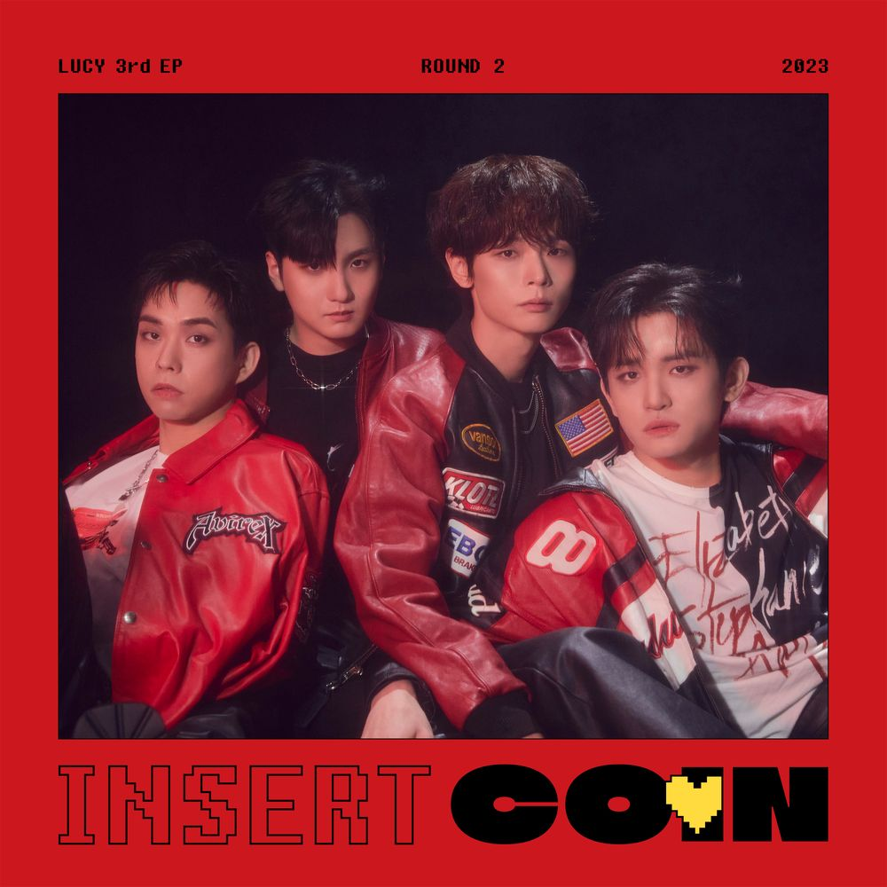

Lucy(Band)

- 개요
- 상세
- 멤버
- 음반
- 그 외 음악활동
- 미발매곡
- 타 아티스트 곡 참여
개요
미스틱스토리에서 선보이는 첫 밴드이자 4인조 보이밴드. 2019년 밴드 오디션 프로그램 JTBC 슈퍼밴드에서 처음 결성되어 준우승을 차지하였다. 팀명은 슈퍼밴드 시절 작업실에서 키우던 강아지 이름에서 따왔으며 라틴어로 '빛'을 의미한다. 폭넓은 다양한 장르의 음악들을 선보이며 활동하고 있는데, 중성적인 느낌의 팀명[6]처럼 편견 없는 음악을 하고 싶다며 장르를 정의하지 않고 LUCY 자체가 장르가 됐으면 한다는 포부를 밝혔다.
상세
슈퍼밴드 당시 직접 녹음한 앰비언스 사운드를 활용한 유니크한 음악 색깔과 청량한 매력으로 큰 사랑을 받았다. 프런트맨이자 보컬이었던 이주혁이 기존 소속 밴드 기프트 활동으로 인해 2019년 말 슈퍼밴드 TOP3 콘서트에 불참하게 되었고, 보컬 최상엽이 이주혁의 빈자리를 채우며[7] 멤버 교체를 맞았다.관련기사 2020년 3월 27일 보도자료를 통해 멤버 신광일이 연습생으로 속해 있던 미스틱스토리와 전속계약을 체결했음이 알려졌다. 이후 2020년 5월 8일 첫 싱글 DEAR.를 발매한 뒤 꾸준한 활동을 이어오고 있다.
타 아이스트 곡 참여
- 또, 그댈 보며
- 당신이 잠든 사이에
- BUCKET LIST
- 12 O'clock
- 같진 않을까